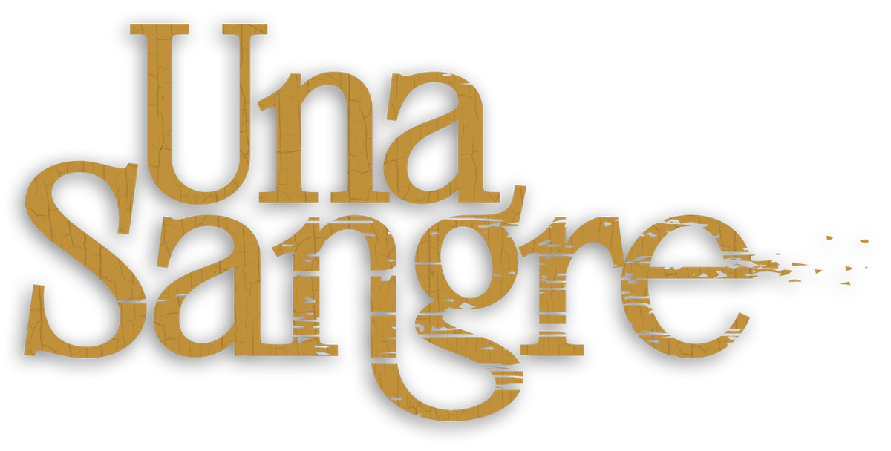
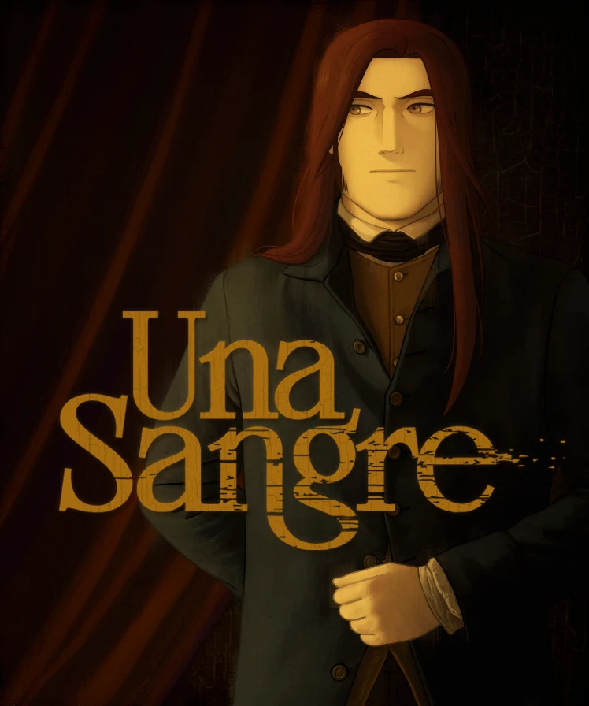
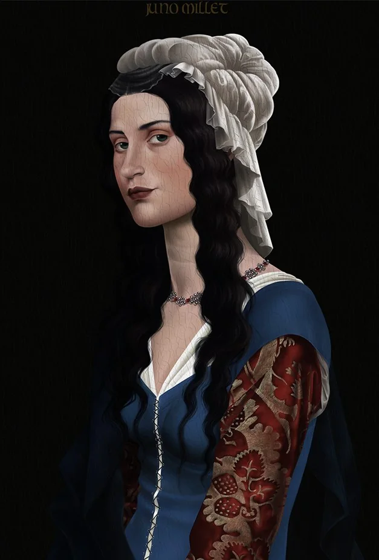
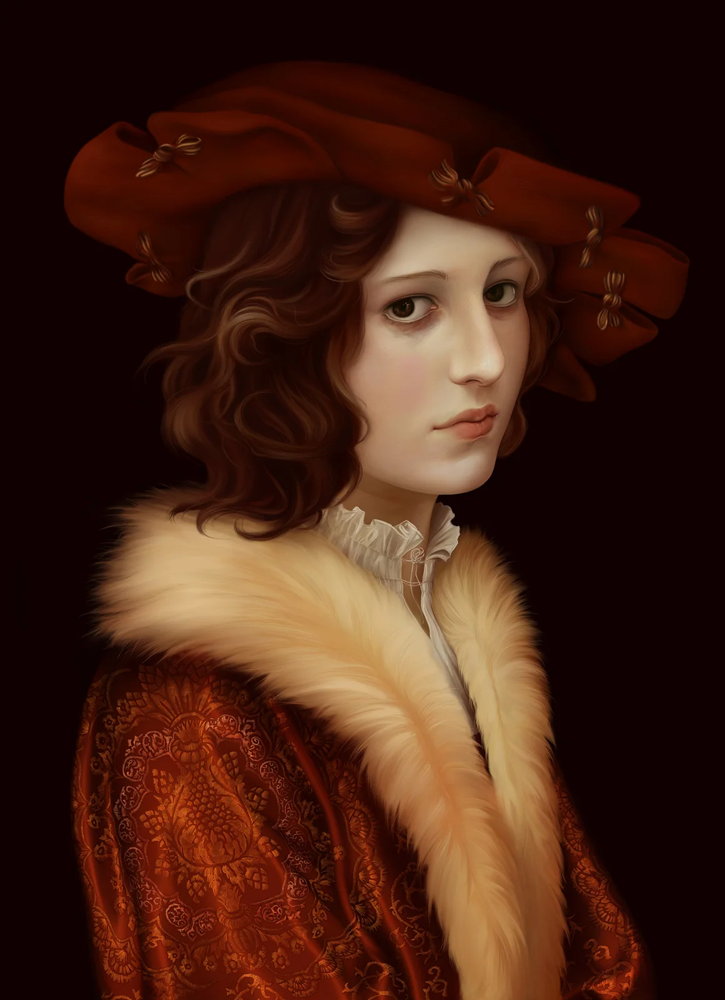
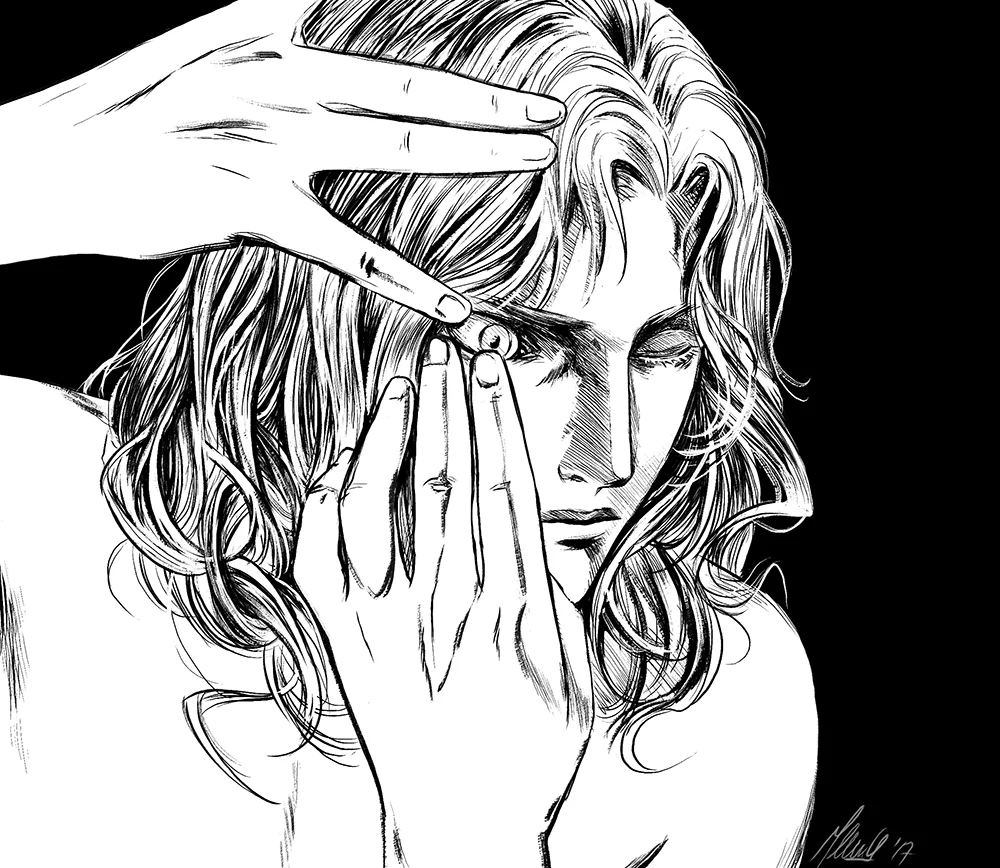
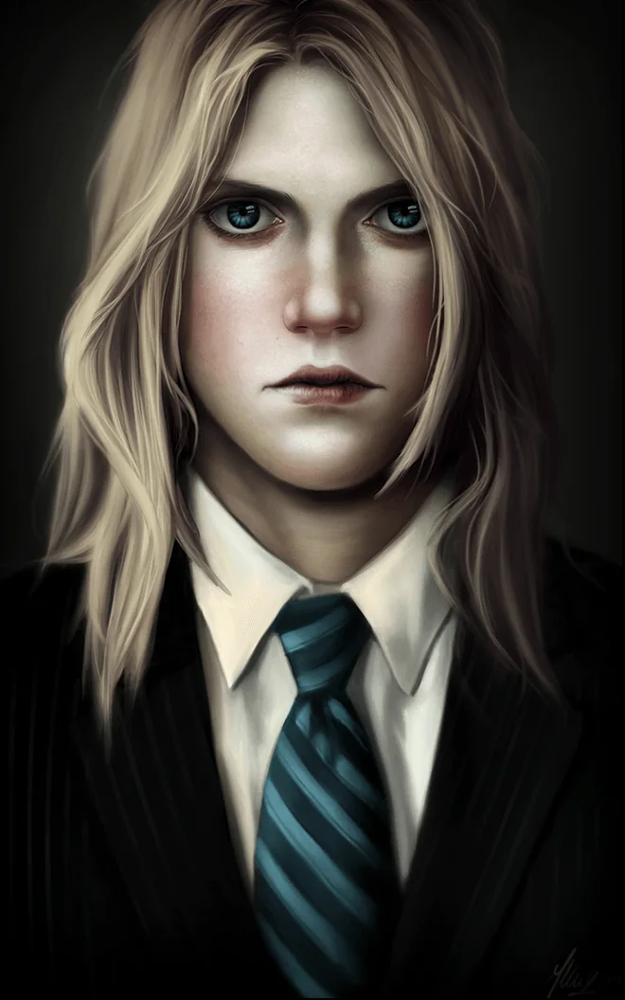
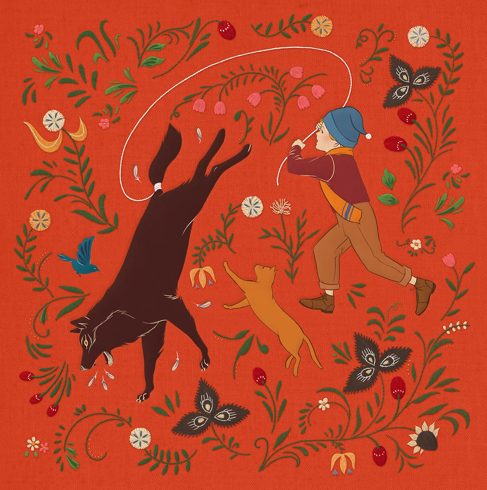
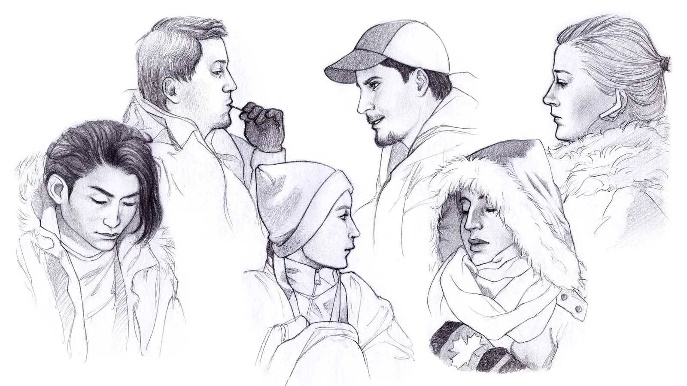

Una historia sobre el costo de seguir existiendo
aún cuando ya no queden razones para hacerlo.

Una historia sobre el costo de seguir existiendo
aún cuando ya no queden razones para hacerlo.
Cinco inmortales. Ocho siglos. Una novela visual literaria sobre la culpa, la fe y el costo de elegir no intervenir.
Una Sangre está escrita, ilustrada y desarrollada por una sola persona con 15 años de experiencia en la industria de la animación 2D (Netflix, Disney TV, Mercury Filmworks), bajo el nombre Studio Minaz.
Cada línea está escrita para leerse despacio. Hay pocas decisiones y no son pequeñas.













Soy May Yeoshen, una artista venezolano-canadiense con más de quince años en la industria de la animación. He trabajado como directora de arte, pintando fondos y diseñando personajes para Disney Television, Netflix, Nickelodeon, Mattel, Warner Bros. y 9 Story, entre otros.
Hoy escribo, ilustro y desarrollo Una Sangre, una historia que llevo desarrollando desde hace más de 20 años.
Directora de arte y artista sénior
Pintora de fondos, Get Jiro! de Warner Bros. (2025)
Diseñadora de color, demo de Fangbone (2014)
Pintora de fondos, Fish Hooks Temporada 1, demo de Shred Force y Team Hot Wheels: The Origin of Awesome de Disney Television (2010 – 2012)
Directora de arte, Polly Can Do de Big Jump Entertainment (2024)
Directora de arte, Polly's Big Day Out / Little Book of Big Firsts (2023 – 2024). Establecí la identidad visual de una serie preescolar: personajes, escenarios y utilería.
Pintora de fondos sénior, The Loud House de Nickelodeon (2022)
Pintora de fondos, Inside Job de Netflix (2021 – 2022)
Supervisora de fondos, The Loud House de Nickelodeon (2018 – 2021). Dirigió al equipo de fondos y mantuvo la coherencia de estilo.
Pintora de fondos, Bubble Guppies de Nickelodeon (2019)
Diseñadora principal, Wellie Wishers de Mattel, Temporada 2 (2017 – 2018)
Supervisora de fondos, Pinky Malinky de Nickelodeon, Temporada 1 (2016 – 2017)
Diseñadora de color, The Bagel and Becky Show de Teletoon (2015 – 2016)
Revisionista de fondos, The Loud House de Nickelodeon, Temporada 1 (2015 – 2016)
Diseñadora de color, The Day My Butt Went Psycho y demos de Nickelodeon (2014)
Pintora de fondos, Camp Lakebottom de 9 Story, Temporada 1 (2012 – 2013)
Ilustradora de libros infantiles, Epic Story Media, Piper's Pony Tales (2023)
Supervisora de diseño de personajes, Sphere Animation, Riley Rocket de TVO (2022)
Diseñadora de personajes, Netflix, cortometraje The Empathy Project (2021)
Ilustradora de libros infantiles, Magelica Inc., Magelica de Louise Courey (2014)
Pintora de fondos, 9 Story Media Group, Wild Kratts Temporadas 1–3 (2009 – 2014)
Pintora de fondos, Big Jump Productions, Bounty Hunters y Benjamin Bear Temporada 4 (2009 – 2013)
Animación tradicional, Algonquin College, Ottawa. Graduada con honores (2006 – 2009)
Arte conceptual, Visual Arts Passage, online (2019 – 2020)
Cortometraje estudiantil Charged: ganador en el Stamford Children's Film Festival, Inglaterra; proyectado en el Yorkton Film Festival.
Seleccionada en Painter, Exotique 4 y Exposé 10, de Ballistic Publishing.
Tutoriales para la revista oficial de Corel Painter y portada del número 16. Imagen ganadora de la campaña de Corel Painter IX.5.
Autora de 98/116, un libro de bocetos de personas dibujadas durante sus trayectos en autobús.
Exposición individual de arte digital, Cámara de Comercio de Puerto Ordaz (2005).
Toon Boom Harmony, Photoshop, Clip Studio Paint, Corel Painter, Premiere, Ren'Py
Español, inglés, japonés (nociones)